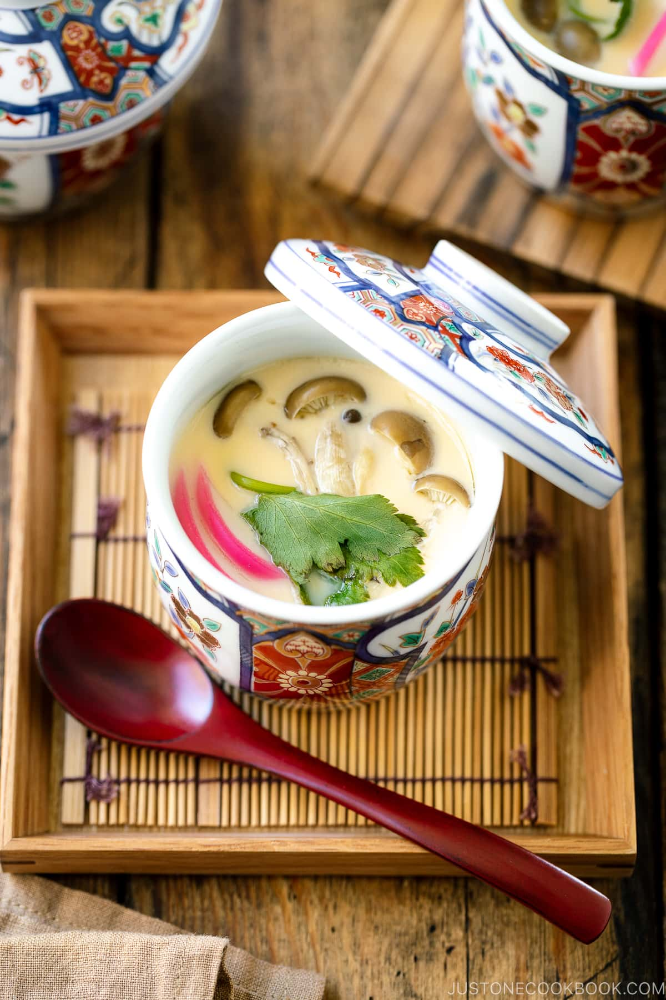

Chawanmushi

Chawanmushi is a classic Japanese savory egg custard steamed in a cup. The smooth and silky custard is seasoned with dashi stock and filled with pieces of tender chicken, kamaboko fish cake, and mushrooms. Experience authentic Japanese home cooking with this famous appetizer.
Ingredients for Chawanmushi
- Eggs
- dashi
- Chicken
- Kamaboko fish cake
- mushrooms
- Ginkgo nuts
- Mitsuba
How to make Chawanmushi
- Prepare the Ingredients. Cut chicken, kamaboko fish cakes, and mushrooms
- Make the custard mixture by combining the eggs, dashi, and condiments
- Assemble the ingredients and custard mixture in cups
- Steam chawanmushi in pot, or the oven for 20 minutes
- Serve hot